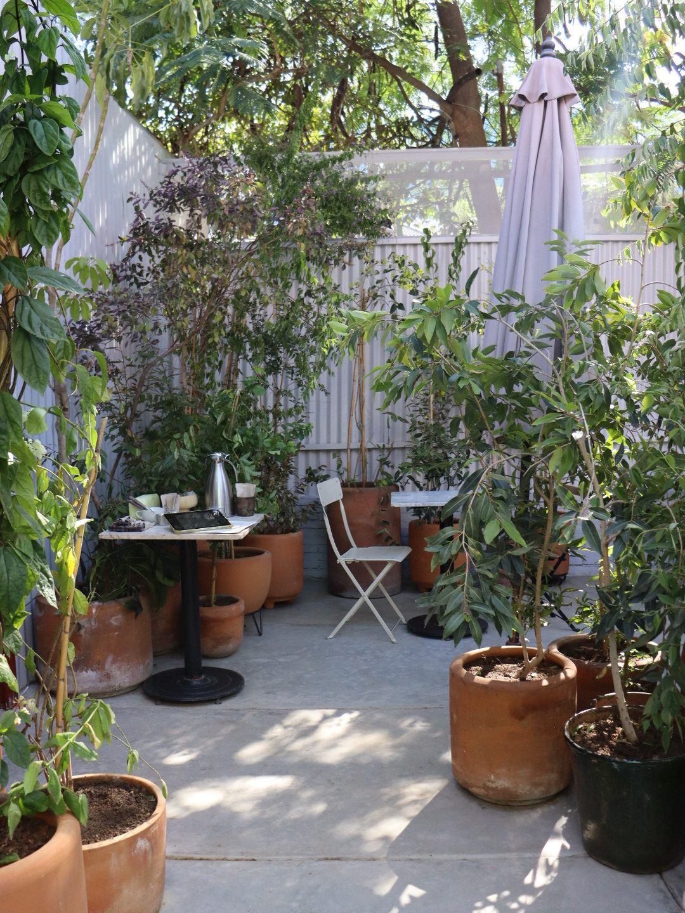
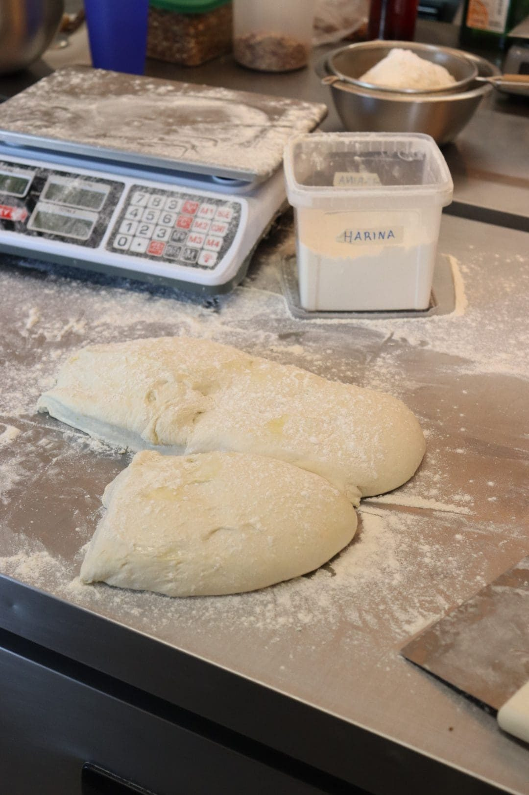
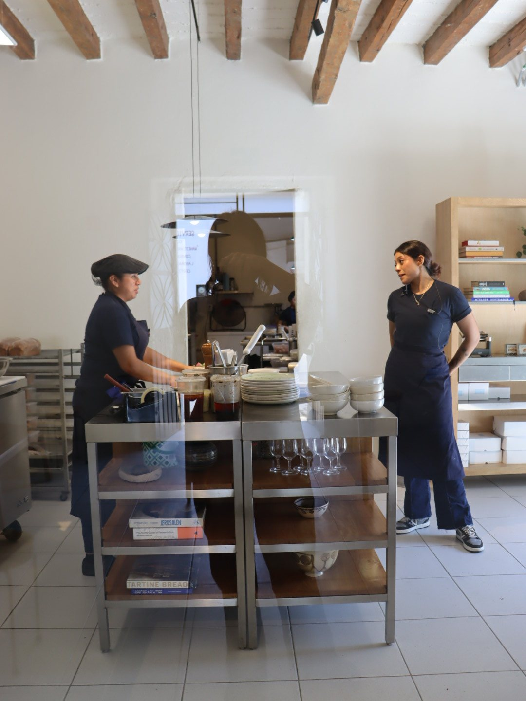
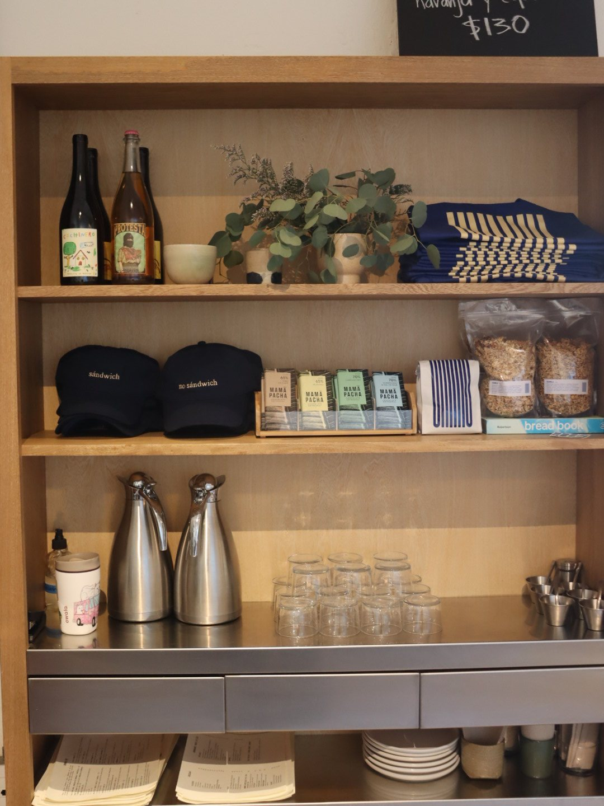
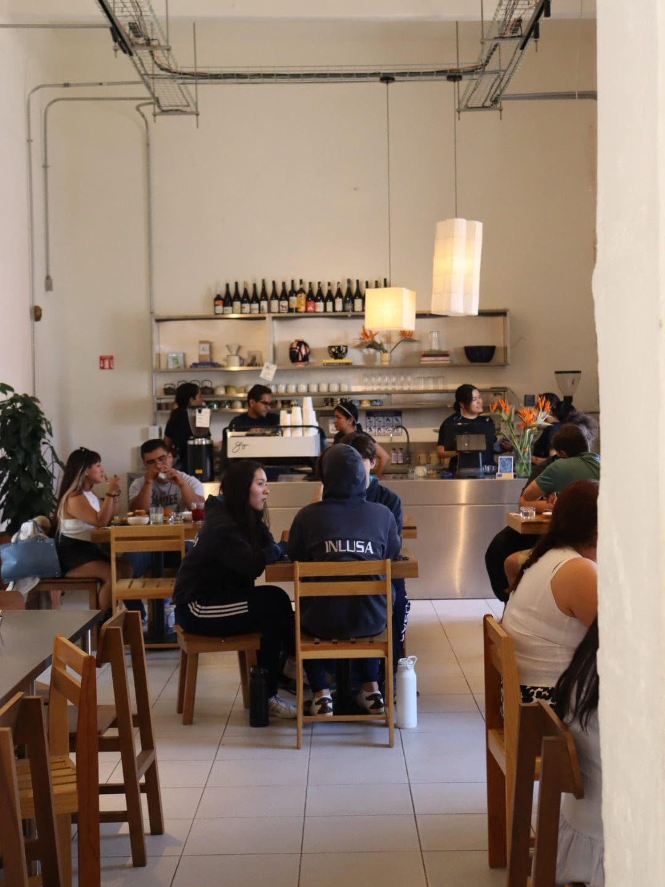
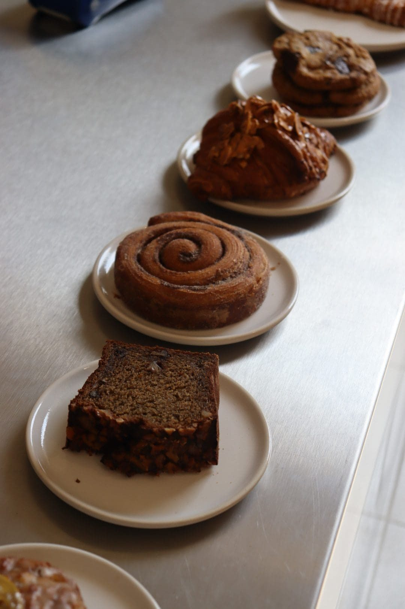
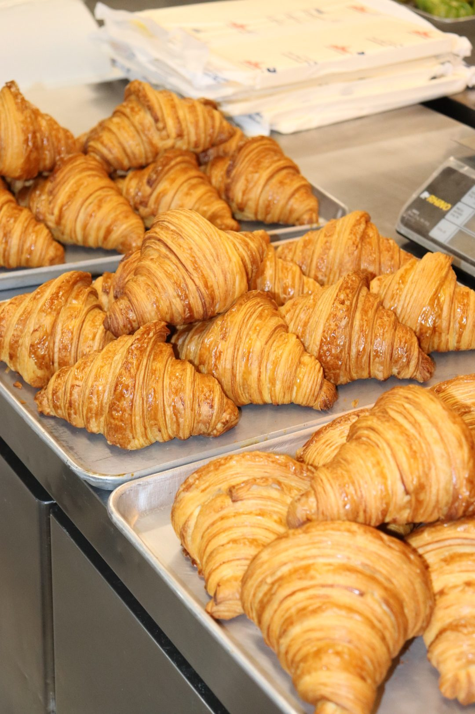
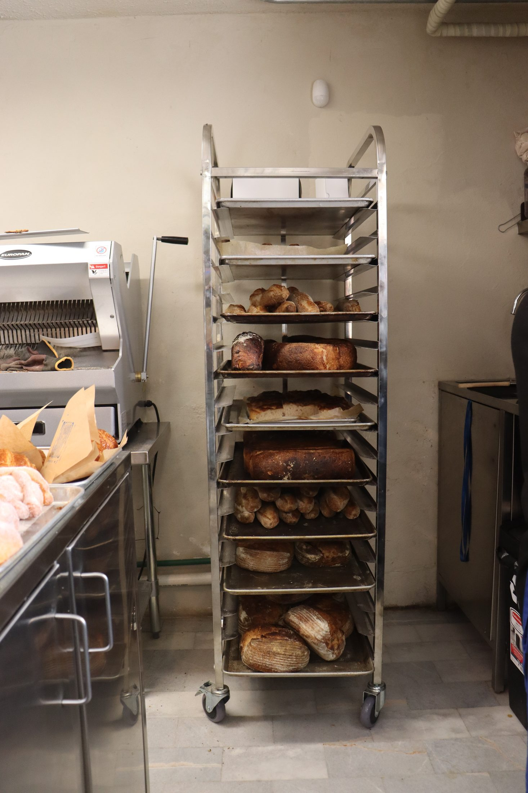
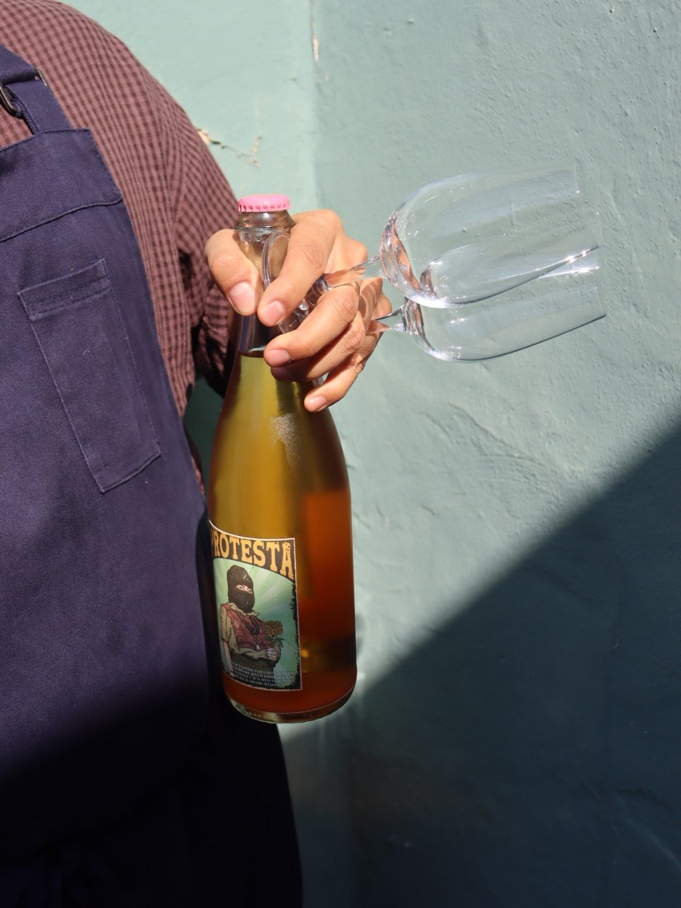
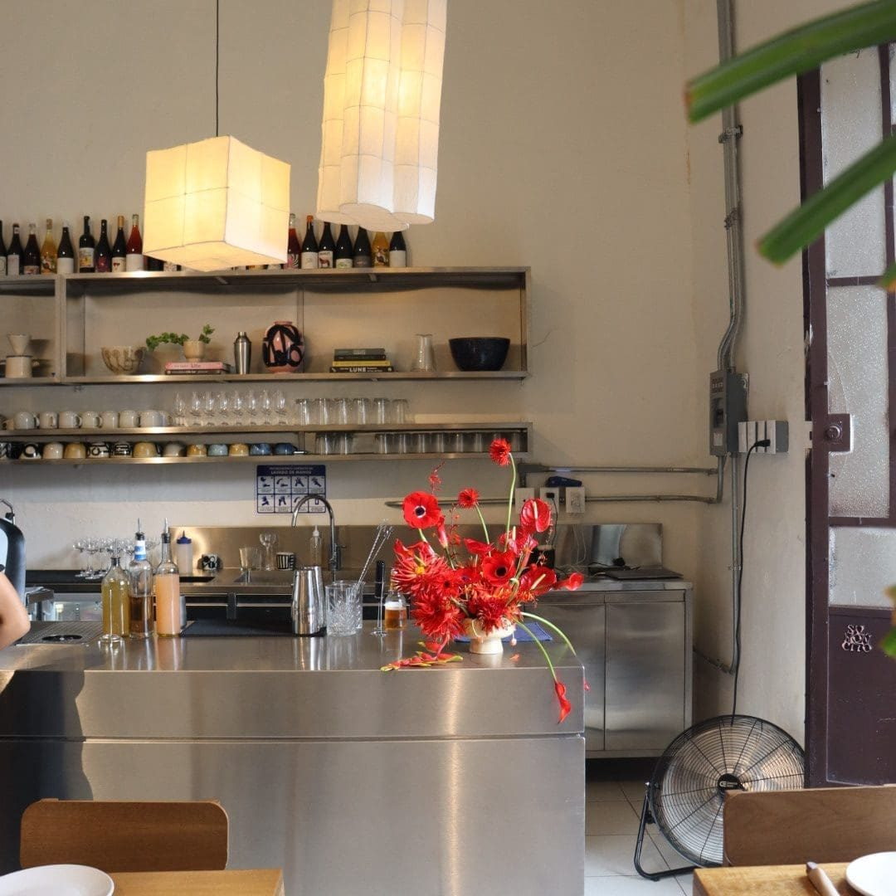

Oaxaca, Mexico
Onnno
Restaurante / Panadería / 2018—2026
Empezó como algo pequeño.
Una barra de licuados y sándwiches, con una mesa larga al centro. Ahí comían personas que no se conocían — y casi siempre terminaban conociéndose. De esas sobremesas, sin planearlo, empezó a crecer una comunidad.
“Nos encanta
cuando alguien dice —
nos conocimos en Onnno.”
Onnno nació en 2018, como un lugar para compartir la mesa. Con los años llegaron el café, más platillos, el pan, más manos y más historias. La idea sigue siendo la misma: que quien entra, se sienta en casa.

La Mesa
“Crecimos alrededor de una mesa. Ahí, entre risas y sobremesas largas, aprendimos que compartir comida es una forma de cariño.”
Recibir bien no tiene que ver con la prisa. Es tiempo, es atención, es hacer que algo cotidiano se sienta especial.
Aquí también se desayuna, se come y se toma café, sin necesitar ninguna ocasión especial. No se trata de hacer mucho — se trata de algo que quieras volver a comer.

4:00am
La hora favorita. La calle está en silencio, sin tráfico ni ruido. Todavía no hay prisa — solo el trabajo, la harina y la mente clara.
El pan es lo primero: la masa que reposó toda la noche entra al horno, y la panadería empieza a oler a recién hecho.
Los viernes se cierra la semana. Los sábados, todo empieza de nuevo — con la motivación de mejorar lo que no salió tan bien.
El Espacio
El espacio es parte esencial de la experiencia. Diseñado por TodoEverything © y construido en colaboración con amigos, cada detalle —de los materiales y colores al arte y la cocina abierta— está cuidadosamente pensado. Todo convive de manera natural, creando un lugar en movimiento, vivo y con su propia personalidad.







Gente, oficio
Más que un platillo, lo que no te puedes perder es la intención. El desayuno lento, el café a solas, la sobremesa con amigos, el pan para la cena en casa, el pastel de cumpleaños. Al final, eso es lo que importa: el momento, el presente.
Detalles hechos por artistas y amigos mexicanos —TodoEverything ©, Andrea Perales, Jaime Levin, Marco Velasco, Rodrigo Treviño, Raúl Herrera, Bolder— entre otros.
El futuro
Lo que viene todavía está por escribirse. Onnno crece a partir de las personas, las conversaciones y las colaboraciones que encuentra en el camino.
Hay muchas ideas, proyectos y mesas por compartir; historias que todavía no existen y que poco a poco irán tomando forma. La intención es seguir creciendo sin perder lo esencial: hacer las cosas con significado, cuidar cada detalle y dejar espacio para todo lo que pueda suceder.
Queremos seguir creciendo sin perder lo esencial: hacer las cosas con intención, cuidar cada detalle y dejar espacio para que nuevas historias encuentren su lugar.
El Horno
Todavía guardan su primer hornito. Vive en el pasillo del personal, casi como un amuleto.
Ahí salió el primer pastel de aceite de oliva y las primeras galletas — horneados en tazas de barro de Atzompa, porque no había moldes. Improvisaron con lo que tenían, aprendiendo en el camino.
Un recordatorio de cómo empezó todo: con poco equipo, y muchas ganas.
Un índice
Gente y proyectos a los que Onnno siempre regresa — por la congruencia entre lo que dicen y lo que hacen.
-
Santiago Moctezuma
Maizajo — Maíz
Él trabaja desde el maíz, ellos desde el trigo. Cruzar esos mundos sería interesante — experimentar, probar, descubrir algo nuevo desde el origen.
-
Graciela Iturbide
Fotografía
Les encantaría invitarla a pasar un día en casa — cocinarle, escucharla, dejar que su mirada converse con la cocina, la gente y la mesa.
-
Perla Valtierra
Cerámica
Su trabajo en barro ha sido una inspiración reciente y silenciosa.
-
Gabriela Cámara
Hospitalidad
Su forma de entender la hospitalidad y el origen de los ingredientes.
-
Sus amigos
Vida cotidiana
Rodearse de gente creativa en lo personal también alimenta el proyecto — las dudas, las conversaciones, las ganas de hacerlo mejor.
Si Onnno fuera un disco, sería un playlist compartido — las canciones de la madrugada horneando, las del ajetreo matutino, las de las sobremesas largas. La música también marca el ritmo del lugar.
No se trata
de hacer más —
se trata de
hacerlo con
sentido.
Estefanía Álvarez & Gustavo Coutiño, Onnno

Mártires de Tacubaya 308‑C
Takeaway, Morelos 1201
Oaxaca de Juárez, Oax., México
Panadería desde antes del amanecer.
Restaurante y mesa, durante el servicio.